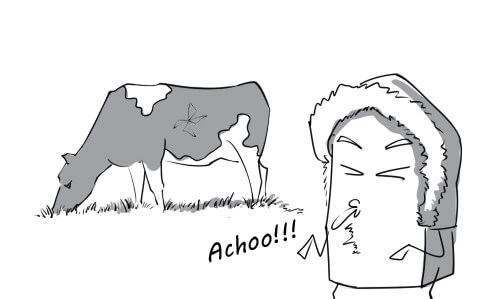
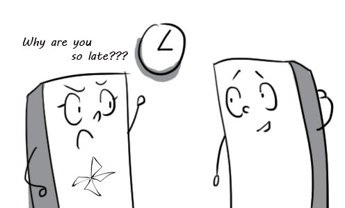
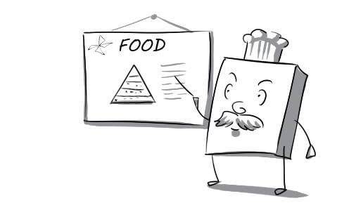
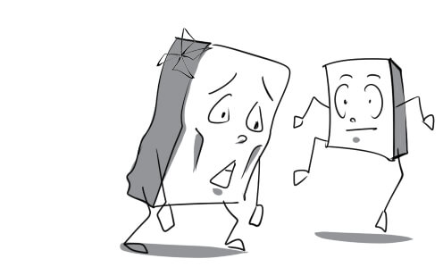
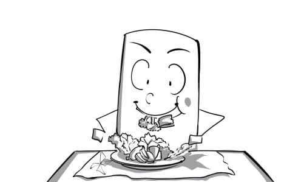
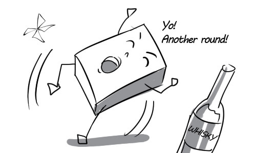
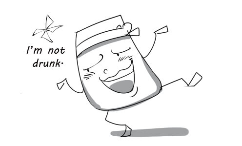
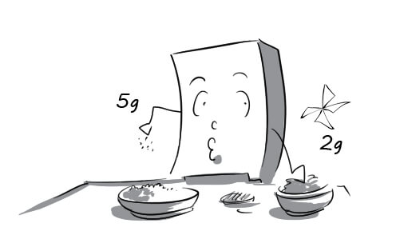
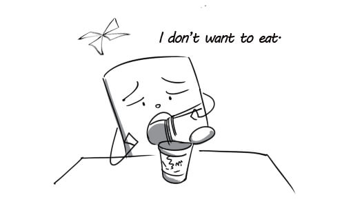
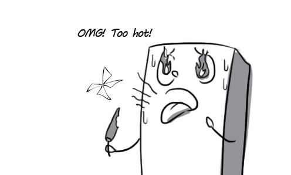

close-knit: My class is a close-knit group, everyone helps each other very well.

endure: These hardy cows can endure even the rough winter weather.

fatherhood: Fatherhood is a lifelong responsibility.

relate: The interviewer asks me if I have any experience related to this position.

rival: The two men really hate each other because they are from rival groups.

temperament: My girlfriend has such a fiery temperament. She always scolds me for being just a little late.

tie: Family meals make strong family ties because everyone can have a chance to share their feelings.

upbringing: All the success he had were the result of his upbringing.
acute: An acute illness is one that has quickly become severe and dangerous.

allergic: I like cats, but unluckily I'm allergic to them.

anxious: Marry was anxious about her weight because she ate a lot during the Christmas.

artery: A blocked coronary artery can result in a heart attack.

asset: Bill Gates' assets are worth about $66 bilion, which makes him the richest man in the world.

brisk: My father has a brisk walk every morning to stay healthy.

chronic: Jogging is one of the best ways to prevent chronic back pain.

counteract: These healthful exercises aim to counteract the effects of tiredness.

crave: A lot of women crave for lemon juice when they are pregnant.

curb: Speed limits are usually set to attempt to curb traffic accidents.

cure: Many types of cancer can now be cured; they're not deadly disease any more.

diagnose: The doctor is checking Tom's symptoms to diagnose his illness.

dietician: My daughter ate a lot but keeps getting thinner, so I took her to an dietician.

diminish: Daisy was very happy when she found out thar her waist size had diminished remarkably.

disorder: Many female models suffer from eating disorders.
disrupt: Peter kept disrupting my work, which made me very angry.

eliminate: Fast foods like KFC should be eliminated from your diet if you don't want to get fat.

harm: Missing a meal once in a while never did anyone any harm.

infectious: Flu is highly infectious; you can get it easily if people around you have it.

ingredient: Mrs Green reads the ingredients list on packaged foods very carefully.

insomnia: Bobby has suffered from insomnia for two weeks.

intake: The man's intake of food is much greater than that of the woman.

moderate: Even moderate amounts of alcohol can be dangerous.

nutritious: The cookbook contains many simple but highly nutritious meals.

onset: Apricot blossom and lovely birds are the signals of the onset of spring.

persistent: My camping trip was ruined by the persistent rain.

portion: Daniel worries that he will get hungry soon because the portion is not generous enough.

stimulate: Good teachers should ask questions that stimulate students to think and answer.

stroke: If you have a stroke, you may die or be unable to use some muscles.
symptom: Walking with difficulty is a symptom of drunkenness.

therapy: Resting in bed is the best therapy for his injury.

trigger: The naughty boy tries to trigger a fight between his two friends by making up a story.

variety: The wide variety of dairy products makes Mrs Green very confused.

vital: Water, light, fertilizer and beneficial insects are vital to tree growth.

adolescence: Adolescence is the time in a person’s life when he or she develops from a child into an adult.

adopt: Angie and Brad have just adopted a baby from Africa.

adulthood: People in Britain legally reach adulthood at 18 years old.

bond: There is a special bond between mother and child. Most mothers love their children.
brotherhood: Most European countries are living in peace and brotherhood at present.
character: Politeness is a traditional part of the British character.
childhood: Human's life includes childhood, adolescence and adulthood.

close: Lauren's relationship with her father isn't good, but she's very close to her mother.

conflict: Jonny and his father cannot live in the same house because there is a lot of conflicts between them.

develop: Singapore developed from a small fishing village into the richest country in South East Asia in only a short time.

establish: Blueway JSC was established in 2010.

inherit: She inherited a fortune from her father when he died.
instinct: Michael started to create music when he was a child, it seemed like an instinct.

interact: In interactive theater, the audience are encouraged to interact with performers.

maternal: Annie is very warm and maternal; she is the most wonderful mother I have ever known.

motherhood: Many modern women have no difficulty balancing motherhood and career.
nature: Heaven's jealous when seeing her boyfriend going with another girl; it's only human nature.

nurture: Jenny stays at home and nurtures her children while her husband tries to earn money.

parental: The baby received intensive parental care from his parents.

paternal: Leo is very paternal; it's lovely to see him playing with his baby.

pregnant: Thomas took a very good care of his wife when she was pregnant.

relative: Peter doesn't recognize his relative because he hasn't seen him for a long time.

resemble: The little boy closely resembles his father.

rewarding: This is a very rewarding book for business. You should read it.

sibling: I have two siblings: a brother and a sister.

stable: After several part-time jobs, he's now got a stable job in a bank.
trust: Don't put your trust in Tim; he always tell lies.

alternate: John goes jogging on alternate days and practices weightlifting on the rest days.

appetite: A mouth-watering display of cakes gives me an appetite.

avoid: I try to avoid supermarkets on Saturdays and Sundays. They're always too busy.
benefit: The finding of oil brought to the town many benefits, including money and fame.

depress: Failure cannot depress a strong man like Lincoln.

diet: Rice is the most important food in Vietnamese diet.

disease: Bad weather and pollution caused many diseases for people.
essential: Even in small companies, computers are essential tools.

exercise: Haley usually does exercise most evenings by running.
factor: We liked both houses, but price was the deciding factor.

fat: I didn't like the meat; there was too much fat on it.

healthy: Keep healthy by eating well and exercising regularly.
maintain: Tommy has maintained this strict diet for a month.
muscular: Because Hugh Jackman has a very muscular body, a lot of girls all over the world are crazy about him.
nutrient: A healthy diet should provide all important nutrients.

obesity: A diet that is high in fat can lead to obesity.

overdo: Overdoing exercise can cause a fatal heart attack.

overeat: Peter felt uncomfortably full because he overate.

overweight: Jane used to be very overweight, but now she is slim enough to be a model.

prevent: Daniel's back injury may prevent him from playing in tomorrow's game.

recommend: In this restaurant, I can recommend the chicken in mushroom sauce - it's delicious, the waiter said.

recover: Tom is in hospital, recovering from a heart attack. He is much better now.

reduce: My weight reduces when I stop eating sugar.

regular: Dominich phones us every Sunday at six, regular as clockwork.

risk: It's always a risk when starting up a new business.

skip: Williams skipped the football game to be with his wife in the hospital; she was very happy about this.

stress: People under a lot of stress may experience headaches, pains and sleeping difficulties.
taste: The soup has very little taste; it's like water to me.

weight: The average weight of a baby at birth is just over seven pounds.